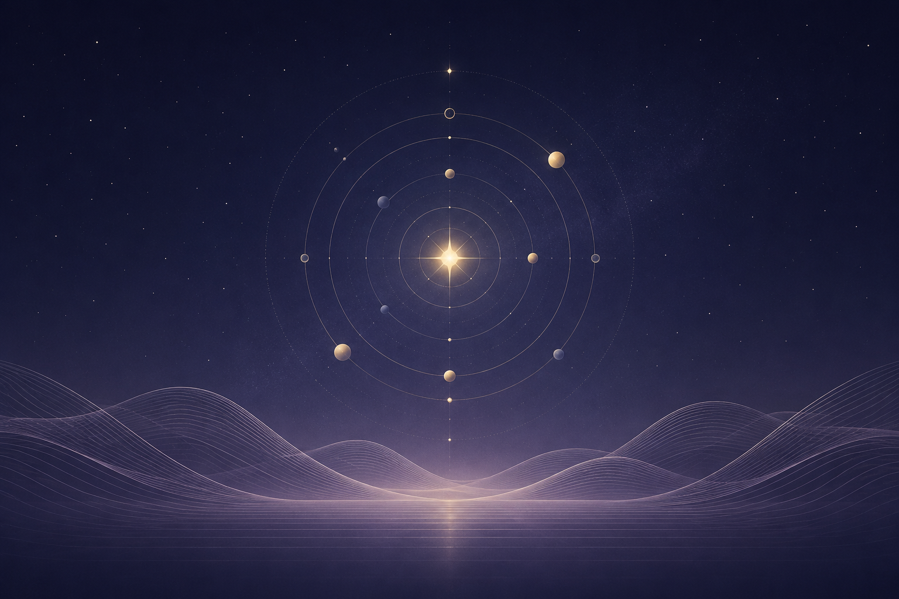

私たちについて

現代宇宙波動研究会
現代宇宙波動研究会は、宇宙に存在するさまざまな波動と、人間を取り巻く環境との関係について研究・考察する団体です。
私たちは、星々の運行、周期現象、共鳴、自然界のリズムなどに着目し、そこに存在する「波動」の性質について独自の視点から探究しています。
現在は、当研究会独自の理論体系である星辰環動共鳴理論（SAC理論）を中心に、星辰の周期と人間の「気」の関係について研究を行っています。
宇宙の波動は、人間の生活にどのような影響を与えるのか。
「気」とは何なのか。
公式な答えを求めるため、理論研究だけでなく、独自の図形・札などの制作を通じた実践的な研究も行っています。
宇宙は常に動いている。
星は巡り、波動は重なる。
私たちは、その未知なる関係性を探究しています。